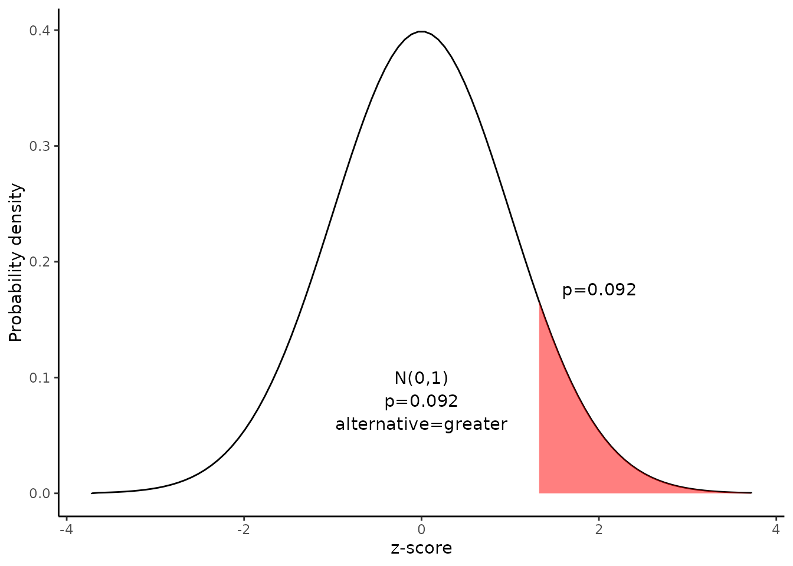

Hypothesis test for the difference between proportions
Source:vignettes/Hypotheis_test_for_a_difference_between_proportions.Rmd
Hypotheis_test_for_a_difference_between_proportions.RmdThis document is prepared automatically using the following R command.
library(interpretCI) |
Problem
Suppose the Acme Drug Company develops a new drug, designed to prevent colds. The company states that the drug is equally effective for men and women. To test this claim, they choose a a simple random sample of 150 women and 100 men from a population of 12500 volunteers. |
Solution
This lesson explains how to conduct a hypothesis test to determine whether the difference between two proportions is significant.
The test procedure, called the two-proportion z-test, is appropriate when the following conditions are met:
The sampling method for each population is simple random sampling.
The samples are independent.
Each sample includes at least 10 successes and 10 failures.
Each population is at least 20 times as big as its sample.
This approach consists of four steps: (1) state the hypotheses, (2) formulate an analysis plan, (3) analyze sample data, and (4) interpret results.
Since the above requirements are satisfied, we can use the following four-step approach to construct a confidence interval.
1. State the hypotheses
The first step is to state the null hypothesis and an alternative hypothesis.
\[Null\ hypothesis(H_0): P_1 \leqq P_2\] \[Alternative\ hypothesis(H_1): P_1 > P_2\]
Note that these hypotheses constitute a one-tailed test. The null hypothesis will be rejected if the proportion from population 1 is too big..
2. Formulate an analysis plan
For this analysis, the significance level is 0.05`. The test method, shown in the next section, is a two-proportion z-test.
3. Analyze sample data
Using sample data, we calculate the pooled sample proportion (p) and the standard error (SE). Using those measures, we compute the z-score test statistic (z).
\[p=\frac{p_1 \times n_1+ p_2 \times n_2}{n1+n2}\] \[p=\frac{0.71 \times 150+ 0.63 \times 100}{150+100}\]
\[p=169.5/250=0.678\]
\[SE=\sqrt{p\times(1-p)\times[1/n_1+1/n_2]}\]
\[SE=\sqrt{0.678\times0.322\times[1/150+1/100]}=0.061\]
\[z=\frac{p_1-p_2}{SE}=\frac{0.71-0.63}{0.061}=1.33\]
where \(p_1\) is the sample proportion in sample 1, where \(p_2\) is the sample proportion in sample 2, \(n_1\) is the size of sample 1, and \(n_2\) is the size of sample 2.
Since we have a one-tailed test, the P-value is the probability that the z statistic is or greater than 1.33.
We can use following R code to find the p value.
\[p=pnorm(1.33,lower.tail=FALSE)=0.092\]
Alternatively,we can use the Normal Distribution curve to find p value.
draw_n(z=x$result$z,alternative=x$result$alternative)
4. Interpret results.
Since the P-value (0.092) is greater than the significance level (0.05), we cannot reject the null hypothesis.
Result of propCI()
$data
[38;5;246m# A tibble: 1 × 2
[39m
x y
[3m
[38;5;246m<lgl>
[39m
[23m
[3m
[38;5;246m<lgl>
[39m
[23m
[38;5;250m1
[39m
[31mNA
[39m
[31mNA
[39m
$result
alpha p1 p2 n1 n2 DF pd se critical ME lower
1 0.05 0.71 0.63 150 100 248 0.08 0.06085776 1.644854 0.1001021 -0.0201021
upper CI ppooled sepooled z pvalue
1 0.1801021 0.08 [95CI -0.02; 0.18] 0.678 0.06032081 1.326242 0.09237975
alternative
1 greater
$call
propCI(n1 = 150, n2 = 100, p1 = 0.71, p2 = 0.63, P = 0, alternative = "greater")
attr(,"measure")
[1] "propdiff"Reference
The contents of this document are modified from StatTrek.com. Berman H.B., “AP Statistics Tutorial”, [online] Available at: https://stattrek.com/hypothesis-test/difference-in-proportions.aspx?tutorial=AP URL[Accessed Data: 1/23/2022].